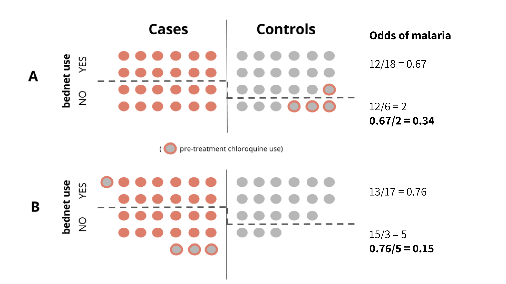

4 Critical Appraisal
All health professionals, whether you are a clinician treating patients, a public health official making policy recommendations, or a representative of a donor agency responsible for setting funding priorities, should make decisions based on evidence, not beliefs. The term “evidence-based” first came into use in the 1990s, nearly two decades after Archie Cochrane, the father of evidence-based medicine and namesake of of the Cochrane Reviews, wrote the book “Effectiveness and Efficiency: Random Reflections on Health Services” and pointed to the need for the medical field to learn from the highest quality studies. This struck a chord with the profession, and medical schools soon began teaching their students evidence-based medicine (EBM), defined by Sackett et al. (1996) as:
The conscientious, explicit and judicious use of current best evidence in making decisions about the care of the individual patient. It means integrating individual clinical expertise with the best available external clinical evidence from systematic research.
Thereafter, the “evidence-based” idea expanded to evidence-based practice more generally, as well as to population-level approaches such as evidence-based public health (Brownson, Fielding, and Maylahn 2009) and evidence-based global health policy (Yamey and Feachem 2011). As in evidence-based medicine, these newer conceptualizations have led to policies and programs that have saved lives and improved health at scale. But before policy makers can make evidence-based decisions, the scientific community must evaluate the strength of the evidence, or conduct a critical appraisal. This topic is the focus of this chapter.
4.1 Be Skeptical of News Reports and Press Releases
Much of what we learn about scientific results from the media comes in the form of click bait, such as this article in Discover Magazine titled “Want to avoid malaria? Just wear a chicken.” Not surprisingly, this study by Jaleta et al. (2016) did not actually require people to wear chickens.
Instead, the authors placed CDC mini-light traps at the foot of a bed in each of 11 homes in an Ethiopian village. They introduced 11 “treatments” over 11 days in a Latin Square experimental design and recorded the number of mosquitoes caught in the traps overnight. One of the treatments indeed used a live chicken, but no human participants were asked to carry it around or let it crawl into bed.
Interestingly, a blood meal analysis suggested that Anopheles arabiensis avoids biting chickens, and keeping a live chicken in a nearby cage resulted in a significant reduction in the number of mosquitoes caught in the traps. Odor compounds specific to the air around chickens also achieved this result. So despite the outlandish title, “Just wear a chicken”, the news report got it mostly right.
That’s not always the case. If you turn on the news or read a university press release, you’ll often find summaries and claims that go far beyond the conclusions of the original article. Science gives us a small glimpse of the “truth,” but the measured and careful language of scientific articles does not always capture the attention of the public.
4.2 Peer-Reviewed Does Not Mean “Correct”
Peer review is an important component of the scientific process, but it is not a guarantee of “truth” or validation of the results. The review process begins when an author sends a manuscript to an academic (i.e. scholarly) journal. Typically, each submission is screened by the journal’s editor, a role often filled by a senior scientist in the journal’s field. If the editor thinks that the research is free of obvious fatal flaws and that the paper will be of interest the journal’s readership, then the editor assigns it to an associate editor with some expertise on the topic to manage the peer-review process. Some manuscripts never make it this far; the editor does a “desk reject” and the peer review process ends before it can even begin.
4.2.1 WHO IS A PEER?
An associate editor then finds 2-4 (or more) scholars in the research field—peers of the authors—to review the paper and comment on the merits of the study. Some journals allow authors to recommend reviewers who might be a good fit for their research and to request that certain colleagues not be considered. Competition within a field, competition for funding resources, and the race to publish original research are a few of the reasons an author might wish to avoid having their unpublished research under the eyes of certain colleagues. The editorial team does not always respect an author’s wishes, but finding appropriate reviewers is challenging, and they usually consider these suggestions.
There is no one model for who is considered a “peer”. A peer can be:
- someone the same level, more junior, or more senior
- someone who shares the same conceptual framework regarding the topic of study, or someone who takes a different view entirely
- someone who works on a parallel topic, or someone who is a direct “competitor”
- someone who is a topic expert, or, when it’s hard to find the right person, someone who does not have much background at all
- someone who is a technical expert on the study methods, or someone who does not know the first thing about the chosen analytical approach
Peer review is most often conducted in a blinded fashion in which the author and the reviewer are not aware of each other’s identities. However, reviewers may reveal themselves inadvertently by recommending that the author cite a lot of their work. And sometimes it is easy to determine an author’s or research group’s identity because their current work builds on previous studies or because various parts of their work have been presented at scientific conferences. The scientific community is a small world, especially in highly specialized fields.
4.2.2 WHAT HAPPENS DURING THE REVIEW PROCESS?
Once the manuscript of a research study arrives on a reviewer’s desk, he or she will take a few weeks (or even months!) to recommend that the paper be rejected or accepted with minor or major revisions (or sometimes no revisions at all). Some reviewers enumerate the perceived flaws in painstaking detail. Others give short or vague feedback that may be of little help to the author or the editor.
When the editorial team receives these reviews, they decide how the manuscript will proceed. Most academics are happy to get a “revise and resubmit” letter (also called an “R&R” letter). The editor usually gives an indication that the revised paper will have a good chance of publication when it revised, but there are no guarantees. Even after the original paper is revised it sometimes goes back out for further peer review, or the editor makes the decision to accept the revision without additional input.
The editor has a difficult task because reviewers often take different positions regarding a submission. As Smith (2006) suggested, the recommendations of multiple reviews can be in direct opposition:
Reviewer A: `I found this paper to be extremely muddled with a large number of deficits’
Reviewer B: `This paper is written in a clear style and would be understood by any reader’.
4.2.3 WHAT DOES NOT HAPPEN?
A critical thing to note, however, is that reviewers almost never have access to a researcher’s data or analysis code. They base their decisions on the methods as they are reported, the results as they are presented, and the conclusions reached by the author in the discussion. At this stage, the data sources must be described, but they are not verified. So even if reviewers find possible flaws in the logic of the research, analysis mistakes and fraud go largely unchecked.18 This lack of verification is why it is wrong to conclude that publication in a peer-reviewed journal means validation, or assurance of the correctness of the conclusions drawn. “Published” does not equal “correct.”19
4.2.4 PEER REVIEW OF FUNDING PROPOSALS
Funding agencies like the National Institutes of Health (NIH) also use a peer-review process to make funding decisions. When a grant application is submitted to an institute at the NIH, a Scientific Review Officer (SRO) checks the proposal for completeness and assigns it to several peer reviewers serving on a Scientific Review Group. The reviewers write up their critiques and assign a score from 1 (exceptional) to 9 (poor). If the preliminary score is too high, the full committee may not discuss the application, which kills the opportunity for funding, at least for that version of the proposal.
If an application, i.e., the study proposal, is discussed, the committee assigns a final score (multiplied by 10 for a final rank of 10–90). A summary statement with comments, the overall impact score, and the percentile score is prepared and returned to the applicant. If the proposal exceeds the payline, a percentile score that most institutes set based on the available budget, then the proposal will likely be funded. The overall success rate for research grant applications in 2015 was 18.3%.
4.3 How to be a Good Consumer of Research
Here is a nice framework for how to be a good peer reviewer or referee. This information provides a solid basis for learning to be a good consumer of research in general. In this guide, Leek describes a scientific paper as consisting of four parts,20 with some amendments:
- An introduction that frames the research question
- A set of methodologies and a description of data
- A set of results
- A set of claims
Leek offers a helpful recommendation about how to approach a new paper:
Your prior belief about [#2-3] above should start with the assumption that the scientists in question are reasonable people who made efforts to be correct, thorough, transparent, and not exaggerate.
The rest of the chapter explores the questions a reviewer might ask of a manuscript when conducting a peer review.
4.3.1 INTRODUCTION SECTION
A good Introduction explains the aim of the paper and puts the research question in context.21 In public health and medicine, this section is typically very short compared to the introductions in other disciplines like economics. Even so, reviewers will often read the Introduction looking for references to key studies that signal the authors are knowledgeable of developments in the field.22
4.3.2 METHODS SECTION
A good Methods section provides enough information to enable a reader to replicate the findings in a new study. Journal space constraints make this challenging, so authors often post supplemental materials online that provide additional details.23 Even with supplemental materials, however, it may be necessary to contact an author before attempting a replication.
The organization of the Methods section varies by discipline and journal, but generally it includes some information about the research design, subjects, materials or measures, data sources and procedures, and analysis strategy. The Equator Network, which awkwardly stands for Enhancing the QUAlity and Transparency Of health Research, is a good resource for understanding modern reporting standards. When preparing a manuscript, most journals expect authors to follow the appropriate checklist for the study design.
Include the completed checklist as an appendix with the article submission to head off reviewers who may complain about missing information that is definitely included.
Is the research design well-suited to answer the research question?
There are many different designs that can potentially answer most research questions, but not all designs are created equal. A graphic like Figure 4.1 is commonly used in the EBM literature to convey this point. The meta-analyses and systematic reviews in Chapter 3 are ‘studies of studies,’ and they sit atop the evidence hierarchy. They enjoy this status because they synthesize the best available evidence. No one study is the final word on a research question, so it makes sense that a meta-analysis that pools results and accounts for variable study quality could potentially provide a better answer than any one study alone.
Figure 4.1: Levels of evidence
However, the Cochrane Handbook for Systematic Reviews (2011) cautions researchers to pay attention to design features (e.g., how participants were selected) rather than labels (e.g., cohort study) because such labels are broad categories. Therefore, this hierarchy is not absolute; these rankings reflect ideals. For example, RCTs can be poorly designed or poorly implemented, and the evidence from such a flawed study is not necessarily better than the evidence from a nonrandomized study just because it carries the label “randomized.”
Is there a risk of bias and confounding?
Some study designs are better than others (at least in theory) because of their ability to address potential bias when conducted properly. As discussed in Chapter 2, the goal of scientific research is inference, and some error and uncertainty is always inherent. Consumers (and producers) of research must accept this fact, and they must be willing to assess the extent to which a study’s design and methods might introduce errors that lead away from the “truth.”
Error can be either random or systematic. Random error adds noise (i.e., variability) to the data, but it does not affect the average. To revisit our previous example, I might step on a scale and see that I weigh 185.12. I step off and back on, and this time I weigh 185.13.24 This random error results from the limitations of my scale. If I continue taking measurements, this random error will balance out. Random means that the readings are not systematically too high or too low.
Systematic error is not random. Systematic error is also known as bias, and it represents a deviation from the “truth.” Let’s imagine that my scale is broken and I do not really weigh 185. I weigh 200. I can worry about the imprecise measurements of 185.12 and 185.13 all day, but I’d be missing the bigger problem that my scale is systematically reading the wrong weight. I can keep taking measurements over and over, but my scale is just wrong. If my goal is 186, I would come to the wrong conclusion that I can stop dieting!
Random error can be estimated, but typically, the extent to which bias affects the study results remains unknown. For this reason, this problem is often framed as a “risk of bias.”
In a nonrandomized design, the biggest risk of bias comes from potential selection bias (Higgins and Green 2011). Selection bias can take different forms. In the context of intervention research, selection bias represents pretreatment (i.e., baseline) differences between study groups.
Webster et al. (2003) conducted a case-control study with a non-randomized (or observational) study design in Eastern Afghanistan to study the efficacy of bed nets as a tool for preventing malaria. Patients who presented at the study clinic with a fever were tested for malaria. Those who tested positive were classified as “cases,” and the rest were classified as “controls.” The researchers asked cases and controls about their bed-net use, education, income, and several other characteristics. They then compared bed-net users and nonusers on their odds of malaria (i.e., being classified as cases).
Webster et al. (2003) wanted to look at potential selection effects with this particular research design, so they also examined patients’ use of chloroquine prior to attending the clinic. If a patient was classified as a control (negative blood film) but tested positive for chloroquine, the patient had received treatment for malaria prior to arriving at the clinic, meaning they really should have been classified as a case.
To determine whether this misclassification of cases as controls could introduce selection bias, these researchers investigated chloroquine use in bed-net users and nonusers. They found that the use of chloroquine prior to clinic testing was less common among patients who reported using bed nets than among nonusers. If chloroquine use was less common among bed-net users, the estimated effect of bed nets would have been underestimated. Consider the following example.

Panels A and B show cases (those who tested positive for malaria) and controls by their reported bed-net usage. In Panel A, 4 patients were misclassified as controls, meaning that they tested negative for malaria but only because they treated themselves with chloroquine prior to the test. The panel also shows that chloroquine use is less common among net users.
Still in Panel A, the odds of malaria (cases) among bed-net users is 12/18, and the odds of malaria among nonusers is 12/6. This is an odds ratio of 0.34, suggesting that bed nets protect against malaria (cf. a value of 1 would indicate no effect).
However, Panel B shows that this effect might be an underestimate. If the misclassified control patients are moved to the case group where they belong, the odds change. Now the odds of malaria among bed-net users is 13/17 and the odds among nonusers is 15/3. This is an odds ratio of 0.15, which suggests an even greater protective effect of bed nets.
In Panel A, the effect was biased toward the null, meaning that the effect looked smaller than it probably is. This bias results in confounding, and chloroquine use is a confounding variable. Confounding variables are correlated with both the “treatment” (i.e., bed-net use) and the outcome (i.e., malaria).
Exploring selection bias
An experimental design typically overcomes the risk of bias and confounding through random assignment. If the sample size is large enough, potential confounding variables like chloroquine use from the example above should be equally likely for all groups.
The key word here is “typically.” Many aspects of an experimental design can result in a risk of bias. For this reason, every Cochrane systematic review assesses several types of known risks of bias in RCTs (Higgins and Green 2011):
- Selection bias
- Performance bias
- Detection bias
- Attrition bias
- Reporting bias
The takeaway at this point should be that every study has a potential for bias and, research consumers should assess the risks of bias that might challenge the validity of the reported results. This type of validity—asking, “are the study results ‘correct’?”—is typically referred to as internal validity (Higgins and Green 2011).
Who (or what) was the subject of study and how were these subjects recruited and/or selected?
Typically, a subsection of the Methods section describes participant recruitment and selection. What made someone eligible or ineligible to participate? Who was excluded, intentionally or not? Exclusion and inclusion criteria define the population of interest and inform the study’s generalizability.
Furthermore, how were participants invited or selected? Was this process random, or did the researchers invite participants based on availability? The methods of sampling and selection have implications for the inferences that are possible regarding the population.
What materials and/or measures were used in the course of the study?
Almost every study uses some type of materials or measures. Diagnostic studies, for instance, evaluate a diagnostic test or a piece of hardware that analyzes the test samples. Environmental studies often use sophisticated instruments to take atmospheric measurements. Studies like these provide specific details in the Methods section about the materials and equipment used.
Study variables also need to be precisely defined. For instance, hyperparasitemia describes a condition of many malaria parasites in the blood. But what constitutes “many”? The World Health Organization (WHO) defines it as “a parasite density > 4% (~200,000/µL)” (WHO 2015b). A manuscript should be precise with respect to how measurement is operationalized.
This holds for studies measuring social or psychological constructs. For instance, in a study of anxiety, a definition of the concept of “anxiety” should be provided. Is an anxiety disorder diagnosed by a psychiatrist? If so, what is the basis for this diagnosis? Or is anxiety inferred from a participant’s self-reported symptoms on a checklist or screening instrument? If so, what are the questions and how is the instrument scored?
How was the study conducted and how were the data collected?
The data collection part of a Methods section should describe what happened after participants were recruited and enrolled. What happened first, second, third? Who collected the data, and how were they trained? For intervention studies, the data collection procedures should describe how participants were randomized to study arms and what happened (or did not happen) in each arm. Were the participants, data collectors, and/or patients blind to the treatment assignment?
How was the data analyzed?
If the study uses a hypothesis-testing framework (and not all do), then details about the study hypotheses are located in the Introduction or Methods section, depending on the journal. The Methods section should also detail how the analysis were carried out. For example, in an intervention study, how was the effect size estimated? Did the study use ordinary least squares regression or logistic regression? The list goes on and on.
When preparing a manuscript, variables should be defined and analyses specified in the Methods section . In the Results section, data and findings are reported without a restatement of the methods or analysis approaches.
Was the study pre-registered and approved by an ethics board?
The US Federal Policy for the Protection of Human Subjects (i.e., the “Common Rule”) defines research as “a systematic investigation, including research development, testing and evaluation, designed to develop or contribute to generalizable knowledge…” If the research involves human subjects, it must be reviewed and approved by an institutional review board (IRB) before any subjects can be enrolled. Most studies fall under IRB oversight, but some, such as retrospective studies or quality control interventions, may qualify as exempt.
Increasingly, researchers are taking the additional step of registering their study protocol prior to the study launch in a study clearinghouse like https://clinicaltrials.gov/. This registration is a requirement for drug investigations regulated by the FDA, and it is expected by many journals.25 Preregistration does not ensure trustworthy results, but the practice fosters a welcome increase in research transparency. If the analysis described in an article deviates from the planned analysis, the authors are expected to provide a compelling justification.
Studies often measure a number of outcomes, sometimes in a number of different ways, and it can be tempting to consider only certain results that are most applicable to the topic under investigation. . Sometimes researchers deviate from the pre-registered protocol and present different results when the pre-registered plan does not work out. This is called outcome switching, and some medical journals do not seem to care, but the COMPare Trials Project thinks they should consider this diversion from the norms of scientific research reporting methods more seriously.
Figure 4.2: Is outcome switching a problem in medical trials?; Source: http://compare-trials.org/.
4.3.3 RESULTS SECTION
Can each finding be linked to data and procedures presented in the Methods?
Every finding in the Results section should be linked to a methodology and source of data documented in the Methods section. Articles in medical journals are some of the shortest, so supplemental materials posted online may be needed to obtain a clearer sense of what the authors did and found.
Is the analysis correct?
Without access to the data and any analysis code, which is still the norm for most publications, results cannot be independently verified. Even with such access, however, some analyses are so complex that only people with extensive training feel qualified to question the accuracy of the results. When reviewing a study with complex analyses, it may be necessary to consult with colleagues.
4.3.4 DISCUSSION SECTION
Is each claim linked to a finding presented in the Results?
Each claim should be supported by results that are reported in the paper. If there is no link between a claim in the Discussion section and a finding in the Results section, the author may be “going beyond the data.” For example, if a manuscript presents data on the efficacy of a new treatment for malaria but does not include any data on cost, then it would be inappropriate to claim that the treatment is cost-effective. Although it is legitimate to speculate a bit in the Discussion section based on documented findings, authors should be careful to label all speculation as such—and these hypothetical forays should never be included the article’s Abstract.
Is each claim justified?
Reviewers must then consider each claim in relation to the results presented to evaluate whether the authors’ arrived at the correct interpretation of the data presented. Did the authors come to a reasonable conclusion, or did they “go beyond the data” by making conclusions that are not supported by the analysis. For instance, if only weak or mixed evidence that a new program works has been provided, are the authors recommending a massive scale-up of the program? Do the authors claim that a program is cost-effective without presenting data on actual costs?
Are the claims generalizable?
Most [studies] are highly localized and paticularistic…Yet readers of [your study’s] results are rarely concerned with what happened in that particular, past, local study. Rather, they usually aim to learn either about theoretical constructs of interest or about a larger policy.
That’s Shadish et al. (2003) writing about the importance of generalizability of research findings and claims. When a study is so highly localized that the results are unlikely to generalize to new people and places, we’d say that the study has low external validity.
One approach to promoting generalizability is to randomly sample participants from the population of interest. For example, Wanzira et al. (2016) analyzed data from the 2014 Uganda Malaria Indicator Survey, a large national survey, and found that women who knew that sulfadoxine/pyrimethamine is a medication used to prevent malaria during pregnancy had greater odds of taking at least two doses than women who did not have this knowledge. Because the UMIS is nationally representative, the results could apply to Ugandan women who did not participate in the study. Would the results be generalizable to women in Tanzania? An argument could be made that they would. Would the results be generalizable to women in France? No, probably not; among other things, malaria is not an issue there.
Are the claims put in context?
A good Discussion section puts the study findings in context by suggesting how the study adds to the existing literature. Do the results replicate or support other work? Or do the findings run contrary to other published studies?
What are the limitations?
No study is perfect, and almost all studies include a paragraph or two outlining the shortcomings recognized by the authors. Indeed, many journals require it. Such limitations span all aspects of the study design and methods, from sample size to generalizability of results, to data validity and approaches to statistical analysis. In addition to knowing how the results fit into the bigger research landscape, communicating shortcomings can provide a valuable resource for future researchers in terms of caveats and research directions.
Additional Resources
Critical appraisal worksheets from the Centre for Evidence-Based Medicine
BMJ Series on “How to Read a Paper”
Critical appraisal resources from Duke Medicine
References
Sackett, David L, William MC Rosenberg, JA Muir Gray, R Brian Haynes, and W Scott Richardson. 1996. “Evidence Based Medicine: What It Is and What It Isn’t.” BMJ 312 (7023). British Medical Journal Publishing Group: 71–72.
Brownson, Ross C, Jonathan E Fielding, and Christopher M Maylahn. 2009. “Evidence-Based Public Health: A Fundamental Concept for Public Health Practice.” Annual Review of Public Health 30. Annual Reviews: 175–201.
Yamey, Gavin, and Richard Feachem. 2011. “Evidence-Based Policymaking in Global Health–the Payoffs and Pitfalls.” Evidence Based Medicine 16 (4). BMJ Publishing Group Ltd: 97–99.
Jaleta, Kassahun T, Sharon Rose Hill, Göran Birgersson, Habte Tekie, and Rickard Ignell. 2016. “Chicken Volatiles Repel Host-Seeking Malaria Mosquitoes.” Malaria Journal 15 (1). BioMed Central: 1.
Smith, Richard. 2006. “Peer Review: A Flawed Process at the Heart of Science and Journals.” Journal of the Royal Society of Medicine 99 (4): 178–82.
Higgins, JPT, and S Green, eds. 2011. Cochrane Handbook for Systematic Reviews of Interventions Version 5.1.0 [Updated March 2011]. The Cochrane Collaboration.
Webster, Jayne, Daniel Chandramohan, Tim Freeman, Brian Greenwood, Amin Ullah Kamawal, Fazle Rahim, and Mark Rowland. 2003. “A Health Facility Based Case–control Study of Effectiveness of Insecticide Treated Nets: Potential for Selection Bias Due to Pre-Treatment with Chloroquine.” Tropical Medicine & International Health 8 (3): 196–201.
WHO. 2015b. “Guidelines for the Treatment of Malaria (3rd Edition).” WHO.
Shadish, W. R., T. D. Cook, and D. T. Campbell. 2003. Experimental and Quasi-Experimental Designs for Generalized Causal Inference. Cengage Learning. http://amzn.to/1E8UYIG.
Wanzira, H., H. Katamba, A. E. Okullo, and D. Rubahika. 2016. “The Challenge of Using Intermittent Preventive Therapy with Sulfadoxine/Pyrimethamine Among Pregnant Women in Uganda.” Malaria Journal 15 (401): 2–7.
Andrew Gelman, a statistician at Columbia University writes a great (non–peer-reviewed) blog and comments regularly on the limitations of peer review and the need for more post-publication review.↩
Authors and journal editors sometimes learn about mistakes and decide to publish a corrigendum or even retract the paper. See the website Retraction Watch for news on retracted studies.↩
Jeffrey Leek is a member of the biostatistics faculty at The Johns Hopkins Bloomberg School of Public Health who teaches a number of very popular massive open online courses (MOOCs) on data science. He has written several books on data analysis and has created a few helpful guides like this one on peer review.↩
If the paper adopts a hypothesis-testing framework, the hypothesis is often stated at the end of the Introduction or the beginning of the Methods section.↩
Very recent work might be missing due to the long publication timeline. Most journal articles include both the date of submission and acceptance, so the reader can get a sense of whether the authors had an opportunity to incorporate other recent published work into their discussion and conclusions.↩
Supplemental materials are often published online “as is,” meaning that the files are not typeset, edited, or peer reviewed.↩
This is my hypothetical example so I get to weigh whatever I want.↩
From the International Committee of Medical Journal Editors: “Briefly, the ICMJE requires, and recommends that all medical journal editors require, registration of clinical trials in a public trials registry at or before the time of first patient enrollment as a condition of consideration for publication.”↩
Another part of the problem is that good science writers are a scarce commodity. One of the best is Ben Goldacre, a British psychiatrist who runs the EMB Data Lab at the Centre for Evidence-Based Medicine at the University of Oxford. He wrote the Guardian’s “Bad Science” column for a decade, and he later published a great book with the same title. His more recent work can be viewed at AllTrials.